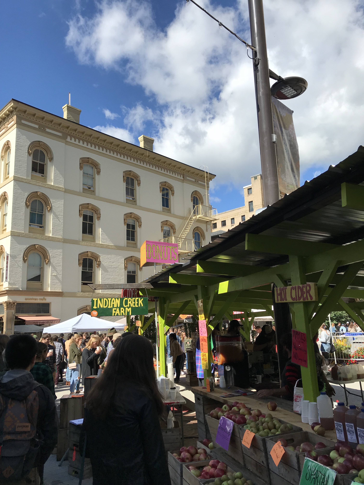

Dates: September 28- September 30
Picture found here
Apple Fest is an annual tradition in the Ithaca Community. It is a time where people from all across the city come togther and enjoy apple-related foods. There are many kinds of foods served at Apple Fest, usually made right in front of the customer for a warm and freshly-made snack or meal. Although there are so many types of apple-related and non-apple-related foods served at Apple Fest, this website will be focusing on the sweets made at Apple Fest.
